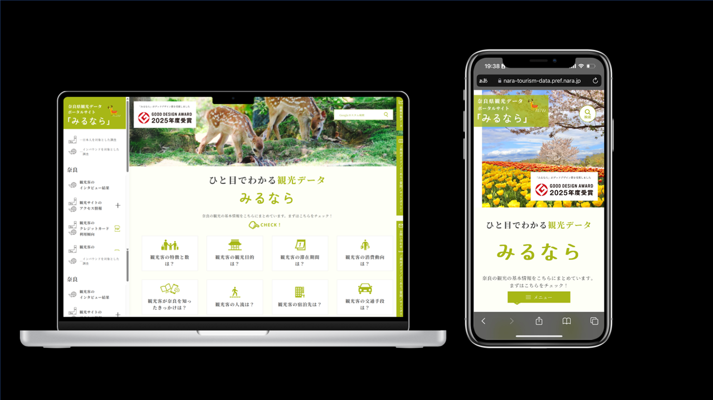

これまでの制作事例
数千人規模の利用を想定した会員制ポータルサイト
「やまとみちの会」会員サイト
（2023年度～現在）

| 公開URL | https://jr-yamatomichi.jp/ |
|---|---|
| 概要 | 大手鉄道会社の奈良訪問キャンペーンと連動し、奈良での独自イベント情報の提供や申し込み機能を備えた会員制ポータルサイトを新規構築しました。2023年のリリース以降、首都圏のアクティブシニア層を中心に数千人規模の会員を獲得し、年数回開催されるイベントには多数の会員様にご参加いただいています。 |
| 技術・環境 | WordPress、WooCommerce、JetEngine ISMS（ISO27001）準拠の情報管理 |
| 自身の役割 (ポジション・関与範囲) |
Webサイト制作の主担当者として、イベント申し込み機能、動画配信機能、お知らせ機能といった基本機能に加え、会員ロール付与による複数種類の会員ステータス管理、Stripeとの連携による有料会員サブスクリプション機能、クーポンコード発行による割引機能などを実装しました。リリース後は、コンテンツ更新やセキュリティーアップデートなどの保守運用を担当し、クライアントから新機能実装の相談を受けて随時対応しています。 |
| 苦労した点 | 開発期間は約4ヶ月の予定でしたが、当初依頼していた制作会社での開発が難航し、リリースまで残り2ヶ月の段階で自社で開発を全て巻き取ることとなりました。上司と私の2名で開発を進めることになりましたが、2人とも未経験の機能要件が多かったため、とにかくドキュメントを読み込み、使用実績が多く継続的なサポートが見込めるプラグインを選定しました。またプラグイン同士が競合しないか、また連携可能かを見極める作業を行いました。特に会員機能周りの設定には時間を要し、時には深夜まで開発を行いつつ、なんとか期間内にリリースすることができました。新卒1年目でのこの経験が、私にとって非常に大切な経験となり、開発業務では「何としてもやりきること」、「よく調べよく考えれば実装できないものはない」という考えを得ることができました。 |
| 工夫した点と成果 | ①とにかくドキュメントを読み込み、プラグインの仕様を理解することに努めました。開発環境の段階で考えられるパターンを全て抽出して試すことや、類似の構築事例をよく調べて取り入れることを意識しました。 ②実際の運用フェーズに入ってからは、社内のメンバーに対してサイトの安全な管理方法の説明や保守業務の指導を行いました。マニュアルを作成した上で、業務を一部委任し運用体制の構築にも貢献しました。 |
観光データの可視化サイト
奈良県観光データポータルサイト「みるなら」
（2024年度～現在）

| 公開URL | https://nara-tourism-data.pref.nara.jp/ |
|---|---|
| 概要 | 奈良県内の観光振興を目的に、観光データを「見える化」するポータルサイトを構築しました。事前申込やログイン操作を不要とし、県内の観光事業者、団体、自治体など幅広い方々に利用いただけるよう設計しています。利用可能なデータには、GPSデータから推計した人流データや、クレジットカード消費データなど、観光業界の分析に適した情報が揃っています。 |
| 技術・環境 | PHP、HTML、CSS、JavaScript、GA4 |
| 自身の役割 (ポジション・関与範囲) |
ポータルサイト制作の主担当者として、制作のディレクションおよび開発(デザイン・マークアップ・サーバー運用)を担当しました。単なる情報表示ツールではなく、観光関連事業者や自治体職員等の具体的なユースケースを想定したUI/UX設計を行い、何度も関係者とレビューを重ねて、使いやすい観光事業の実践ツールとしてデザインしました。 |
| 苦労した点 | ①弊社にて契約したサーバーにポータルサイトのデータを置き、自治体保有のサブドメイン名で公開する運用形態となったため、サーバーのDNSレコードを自治体サーバーに登録いただくための各所への説明と手配を行いました。 ②クライアントから頻繁にデザインの意図やサイトの挙動に関する質問を多くいただいたため、都度適切な返答を行えるよう説明の前には入念な準備を行いました。 ③限られた開発期間の中でも指定日にリリースできるよう、コンサルティング会社の担当者と綿密に連絡をとりスケジュールを調整しました。 |
| 工夫した点と成果 | ①アクセス数やアクセス者の属性を把握するため、Gtagをサイトに埋め込み、GA4の計測を有効化しました。クライアントと自社へ管理者権限を付与し、データ分析が可能な環境を整えました。 ②デザイン面では、奈良らしさを出すため若草山の若草色を採用し、サンセリフ体によって優美な印象を演出しました。 ③本ポータルサイトは、2025年度グッドデザイン賞に選出されました。観光事業者がデータと向き合うきっかけを提供し、客観的なデータを活用した施策立案を促す仕組みが評価されました。 |
Web制作以外の実績
・旅行業務関連
国内旅行業務取扱管理者資格を取得(2023/8)
県庁・各市町村より観光関連業務を受託し、ツアー、体験コンテンツ企画を担当
OTA(Online Travel Agency)への体験・ツアー商品掲載業務を担当
県内社寺等との調整、通訳手配、宿泊手配、運送手配、広報、添乗などを担当
・学術活動
学生時代の卒業論文を査読論文誌に投稿し採択
現在、一般公開中